Таблица дропа всех палов

Ламболл

Каттива

Чикипи

Лифманк
Камоноске

Камоноске Игнис
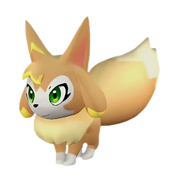
Викси

Селарай

Селарай Лакс
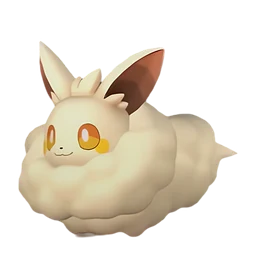
Кремис
Кроадзиро

Кроадзиро Нокт

Хербил

Тифант

Гумосс

Паппирай


Джолтхог

Джолтхог Крист

Депрессо

Пенгуллет

Пенгуллет Лакс

Пенкинг

Пенкинг Лакс

Хукрат

Мелпака


Кингпака Крист

Даэдрим

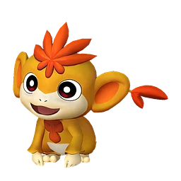
Танзи Игнис
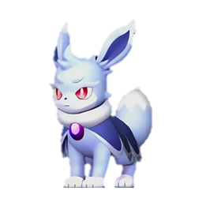
Нокс

Фламбелль

Руби

Мау

Мау Крист

Рашоа

Фокспаркс
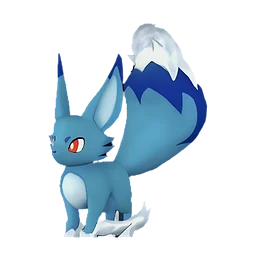
Фокспаркс Крист
Килламари

Килламари Примо


Иктирдир

Иктирдир Тэрра

Дайэхаул

Каприти
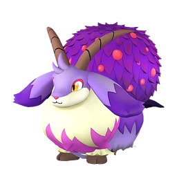
Каприти Нокт

Сви

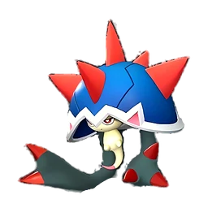
Туртакл

Туртакл Терра

Хангю
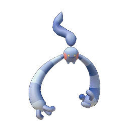
Хангю Крист

Вулипоп
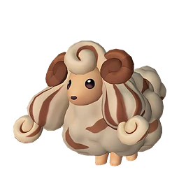
Вулипоп Терра

Моззарина

Азуроб

Азуроб Крист

Спаркит

Келпси

Келпси Игнис

Риббани

Риббани Ботан
Джелиэтта
Джелрой
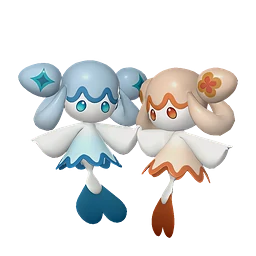
Амиона

Глуппи
Глуппи Примо

Эрмург
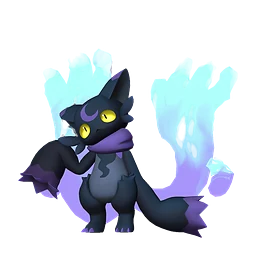
Виспау


Томбат

Токотоко
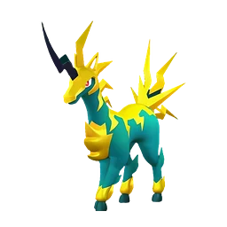
Юнивольт
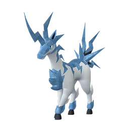
Юнивольт Крист

Гобфин

Гобфин Игнис


Лупмун Крист

Когнито
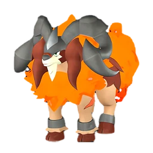
Арсокс

Маффли
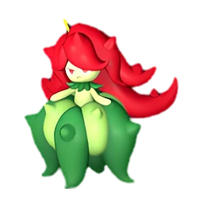
Бристла

Синнамос

Пуффольт

Элфидран

Элфидран Аква

Ванвирм

Ванвирм Крист
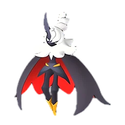
Фелбэт

Ваэлет


Элизаби
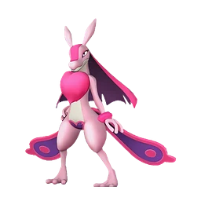
Ловандер
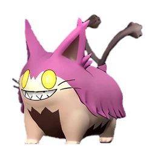
Гринтэйл

Тарантрисс

Полапап Терра

Лизпанк

Лизпанк Игнис

Горират

Горират Терра

Серфент

Серфент Терра

Робинквилл

Робинквилл Терра

Флопи
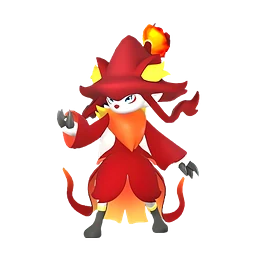
Виксен

Виксен Нокт
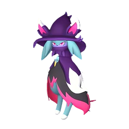
Катресс

Катресс Игнис

Хэлзефир

Хэлзефир Лакс
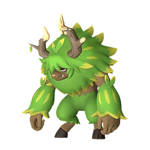
Элгрув

Элгрув Крист

Лунарис


Фенглоп Лакс
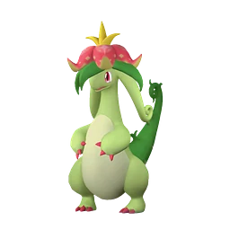
Диноссум
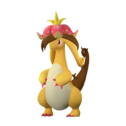
Диноссум Лакс

Буси

Буси Нокт
Манчилл
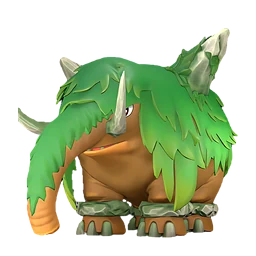
Мамморест

Мамморест Крист

Финсайдер

Финсайдер Игнис

Петаллия

Петаллия Игнис

Лифан
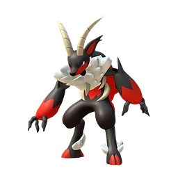
Инсинерам

Инсинерам Нокт

Даззи
Даззи Нокт

Пирин

Пирин Нокт

Релаксаурус
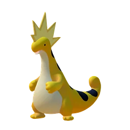
Релаксаурус Лакс
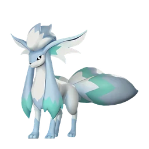
Фоксайкл
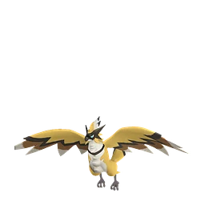
Райберд
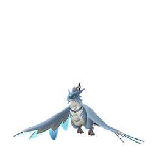
Райберд Крист

Ганглер Игнис

Райхаунд

Райхаунд Крист

Менастинг

Нидолл

Нидолл Нокт

Рейндрикс

Моссанда
Моссанда Лакс

Чиллет

Чиллет Игнис

Молдрон
Молдрон Крист

Палумба

Дигтос

Брончерри

Брончерри Аква

Думад

Думад Гилд

Бралоха

Кицун Нокт

Блейзхаул


Фростплюм

Маджекс

Сибеликс

Сибеликс Примо

Мараит

Шрумер

Шрумер Нокт

Айселин

Йомира

Йормунтайд Игнис

Судзаку Аква


Фэски
Фэски Ботан

Нежноцвет


Скатласс
Скатласс Игнис

Рептиро

Рептиро Крист

Старрион

Старрион Примо
Пиродон

Пиродон Крист

Криолинкс Терра

Снаглоу

Вумпо

Вумпо Ботан
Гостлайт
Карнибора

Блазамут

Блазамут Рю
Нет точек спавна в данных

Дуалит
Дуалит Нокт
Анубис

Сехмет

Скорпио

Тетроис

Тетроис Примо


Мимидог
Зеногард
Нет точек спавна в данных

Прунелия

Найтмери

Найтмери Ботан


Омаскул

Валаска
Валаска Игнис

Селесдир Нокт
Астегон

Теранайт

Теранайт Игнис

Снок

Снок Терра

Суффлин


Худл

Слоуватт
Бакеми

Солмора

Солмора Лакс

Айдролон

Айдролон Игнис

Фларакл

Офидия

Дупин

Роуджей

Медуна

Люмен

Вистелла

Соленна

Рэндзиши

Аэгидрон

Гриззболт

Лилин

Лилин Нокт

Орсерк

Фалерис

Фалерис Аква
Шэдоубик

Селена

Бастигор
Шаолонг

Сильванс
Нет точек спавна в данных
Дандилорд
Нет точек спавна в данных

Бэллануар
Нет точек спавна в данных

Бэллануар Либеро
Осколок тьмы×2–3100% Качественное снадобье восстановления×1–2100%
Качественное снадобье восстановления×1–2100% Деталь древней цивилизации×4–6альфаЦенные внутренности×2–3альфа
Деталь древней цивилизации×4–6альфаЦенные внутренности×2–3альфа
Нет точек спавна в данных

Зенолорд
Нет точек спавна в данных
Харталис
Нет точек спавна в данных

Паладиус

Некромус

Фросталлион Нокт

Нептилиус
Кораллиновая руда×10100% Гексолит×10100%
Гексолит×10100% Алмаз×130%Большая душа Пала×11%Деталь древней цивилизации×6–8альфа
Алмаз×130%Большая душа Пала×11%Деталь древней цивилизации×6–8альфа Ценный драконий самоцвет×2–3альфа
Ценный драконий самоцвет×2–3альфа
Нет точек спавна в данных

Джетрагон

Панталус
Нет точек спавна в данных